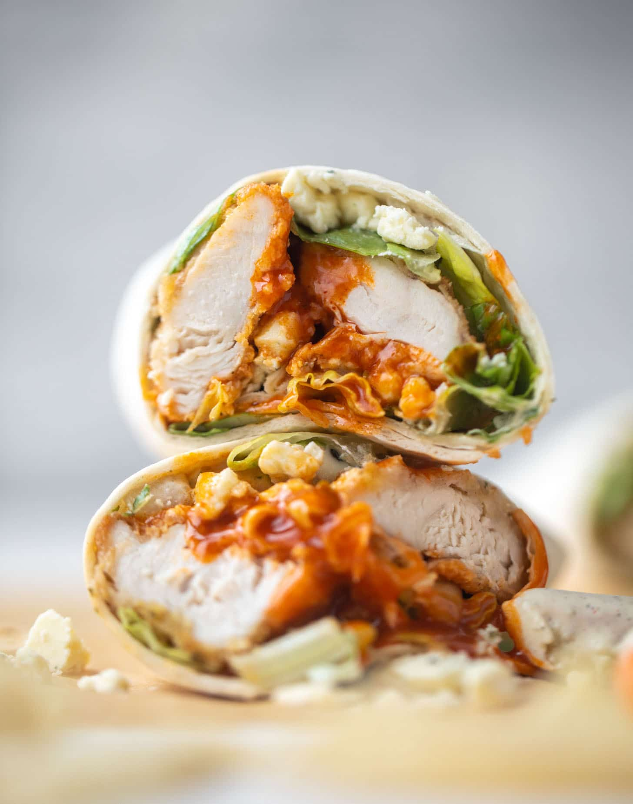

Description
The best thing to put inside a tortilla is buffalo chicken. This technically is up for discussion considering it is an opinion and not fact. But, it is of my opinion that is indeed a fact. So without debate, the best thing to put in a tortilla wrap is buffalo chicken! Today you will learn how to prepare this simple dish. It requires little ingredients and minimal prep time. If you have 30 minutes and 530 calories to spare, keep scrolling to follow a step by step guide to making this delicious snack!
Ingredients
- Chicken Breasts
- Buffalo Sauce
- Olive Oil
- Salt
- Flour Tortillas
- Romaine Lettuce
- Shredded Cheese
Steps
- Slice chicken breast into several long, thin strips.
- Whisk olive oil, buffalo sauce and salt together in a small bowl. Add chicken and allow to marinate for at least 10 minutes.
- Add chicken strips to a large non-stick skillet over medium high heat, cook until no longer pink.
- Lay tortilla(s) on a plate and add shredded cheese and lettuce.
- Place chicken onto tortilla and wrap tight.